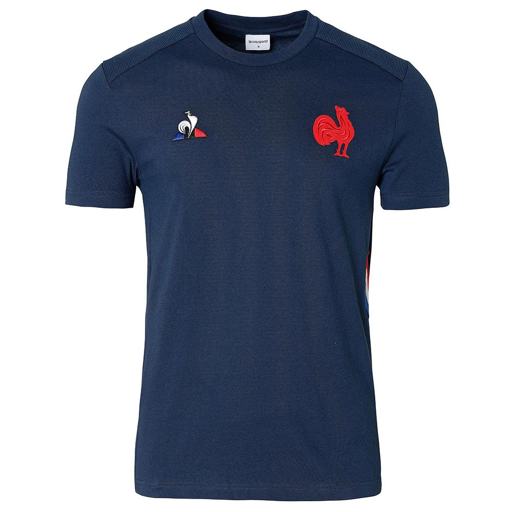
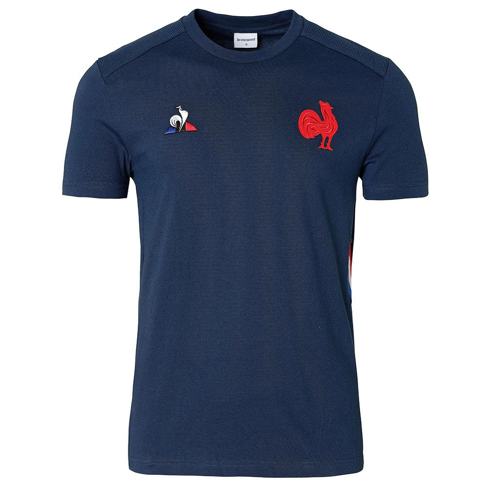

LE COQ SPORTIF
Le Coq Sportif (French pronunciation: , "the athletic rooster") is a French producer of athletic shoes, activewear, and sporting accessories. Founded in 1882 by Émile Camuset and located in Entzheim, France, the company first issued items branded with its now-famous rooster trademark in 1948. The company's name and trademark are derived from the Gallic rooster, a national symbol of France. The company is a subsidiary of Airesis SA based in Switzerland.
 
